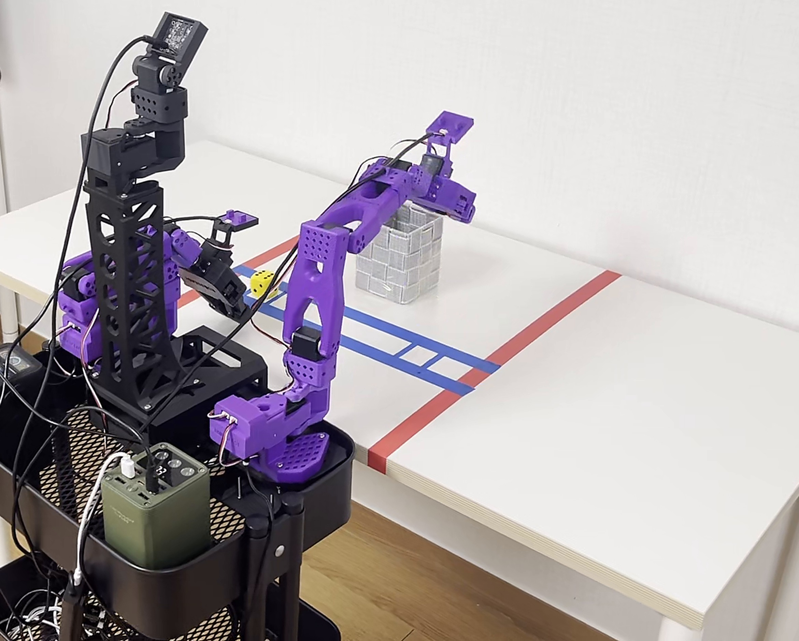

저가형 로봇의 VLA 정책 평가는 주로 고정형 단팔에서 이루어졌다. 이동 베이스와 양팔을 하나의 정책으로 학습한 평가는 많지 않다.
최근 높은 조작 성공률이 언어 지시 추종을 보장하지 않는다는 문제가 제기되고 있다. 양팔 로봇은 목표 물체에 따라 사용할 팔을 골라야 하므로, 언어 지시가 행동 결정에 반영되는지를 직접 확인할 수 있다.
또한 팔 선택 분기 전후로 언어·영상·관절 상태 입력을 하나씩 바꿔 넣어 정책이 무엇에 반응하는지 분석한다.
로봇은 SO-ARM101 양팔과 3옴니휠 베이스로 구성된다. 행동과 관측 상태는 양팔 관절 12개와 베이스 속도 3개의 15차원이며, 카메라는 4대다.
로봇은 좌·우 두 출발 위치 중 한 곳에서 시작해 1 m 앞 책상까지 이동한 뒤, 좌우에 놓인 빨강·노랑 주사위 중 지시된 색을 그쪽 팔로 집어 바구니에 넣는다.
언어가 설명할 수 있는 행동 차이는 23.6초 이후에만 존재한다. 반면 영상·관절 상태는 처음부터 끝까지 오차를 줄여 준다. 관절값을 그대로 복사만 해도 오차가 6.741에서 1.555로 줄어, 정책이 줄인 오차의 84%에 해당한다.
SmolVLA는 조작 네 단계 모두 ACT보다 유의하게 높았다(RQ1 확인). 그러나 지시 색상 일치는 50.0%에 그쳤다. 8개 조건 전부에서 지시와 무관하게 오른쪽 주사위를 집었고, 배치가 좌우 균형이라 산술적으로 50%가 된 것이다. ACT도 팔이 움직인 34회 중 32회(94.1%)가 오른팔이었다.
정책이 어떤 입력에 민감한지 보기 위해, 학습 데이터 104 에피소드에서 입력을 하나씩 교체하였다. 분기 직전 312 장면이 대상이며 로봇은 움직이지 않는다.
| 바꾼 입력 | 정답 팔이 바뀌어야 하나 | 이상값 | 실제 |
|---|---|---|---|
| 잡음 (난수 시드) | 아니오 | 0% | 0.6% |
| 지시문 (반대 색) | 예 | 100% | 1.3% |
| 영상 (반대 배치) | 예 | 100% | 58.7% |
| 관절 상태 (반대 배치) | 아니오 | 0% | 45.2% |
| 영상 (같은 배치) | 아니오 | 0% | 51.3% |
| 관절 상태 (같은 배치) | 아니오 | 0% | 47.8% |
SmolVLA는 조작 네 단계 모두 ACT보다 유의하게 높은 성공률을 보였으나(RQ1), 지시 색상 일치는 50.0%에 그치고 40회 모두 오른팔을 사용하였다(RQ2). 입력 교체 실험에서도 지시문 변경은 예측 팔에 거의 영향을 주지 않았고, 영상과 관절 상태 변경에는 크게 반응하였다. 특히 배치가 같은 장면으로 바꿔도 절반이 뒤집혀, 정책이 에피소드별 장면·자세의 미세한 차이에 의존했을 가능성을 보였다. 구조가 다른 두 정책이 같은 쏠림을 보인 것은, 이것이 특정 모델의 성질이 아니라 행동과 관측 상태가 동일한 변수로 구성되는 데이터 수집 방식에서 비롯함을 시사한다.